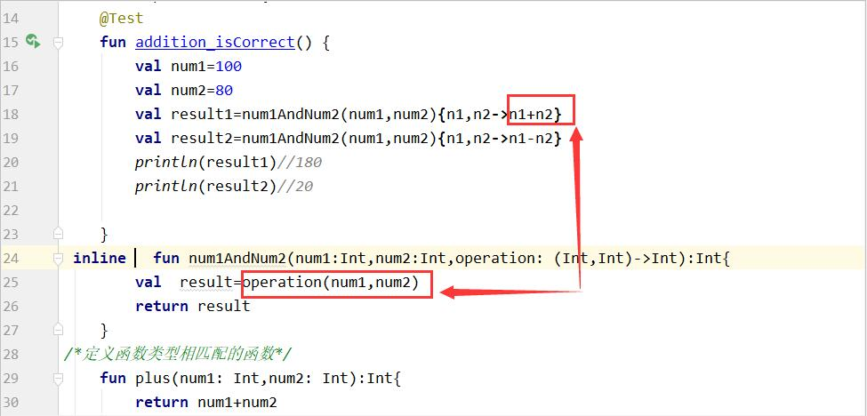
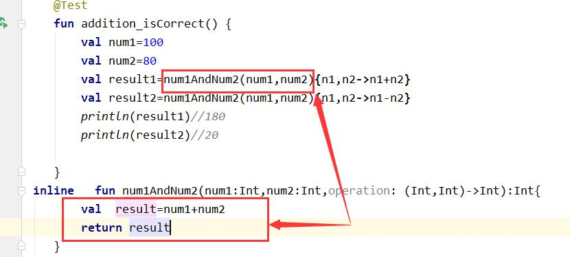
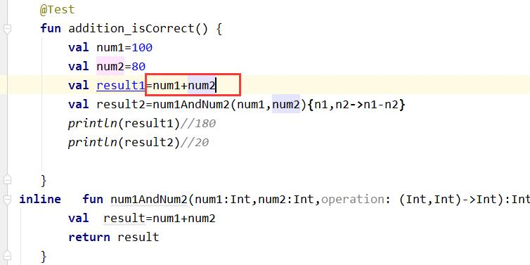

定义高阶函数
class ExampleUnitTest { @Test fun addition_isCorrect() { val num1=100 val num2=80 val result1=num1AndNum2(num1,num2,::plus) val result2=num1AndNum2(num1,num2,::minus) println(result1)//180 println(result2)//20 } fun num1AndNum2(num1:Int,num2:Int,operation: (Int,Int)->Int):Int{ val result=operation(num1,num2) return result } /*定义函数类型相匹配的函数*/ fun plus(num1: Int,num2: Int):Int{ return num1+num2 } fun minus(num1: Int,num2: Int):Int{ return num1-num2 } }
Lambda表达式定义
fun addition_isCorrect() { val num1=100 val num2=80 val result1=num1AndNum2(num1,num2){n1,n2->n1+n2} val result2=num1AndNum2(num1,num2){n1,n2->n1-n2} println(result1)//180 println(result2)//20 }
扩展函数里面定义高级函数
import java.lang.StringBuilder class Higher {//实现apply这个函数的功能 } //StringBuilder定义扩展函数 // StringBuilder.语法结构表示这个函数类型定义在哪个类当中的 fun StringBuilder.build(blok:StringBuilder.()->Unit):StringBuilder{ blok() return this } fun main(){ val list= listOf("apple","juzi","xiangjiao","putao") val result=StringBuilder().build{ //Lambda表倒是接收的函数类型 //是StringBuilder类当中定义的函数类型 append("打印.\n") for (i in list) { append(i).append("\n") } append("打印结束") } println(result) }
打印. apple juzi xiangjiao putao 打印结束
内联函数6.5.2
1

2

2

6.5.3没有学习